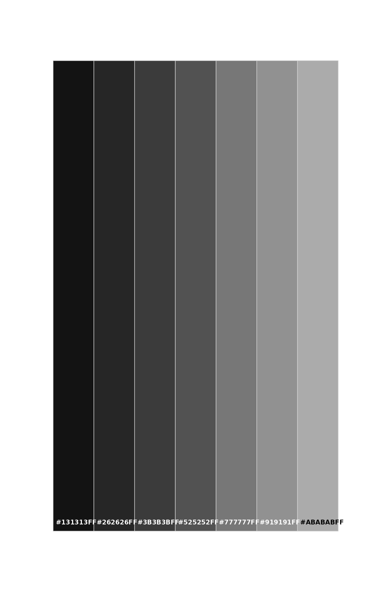
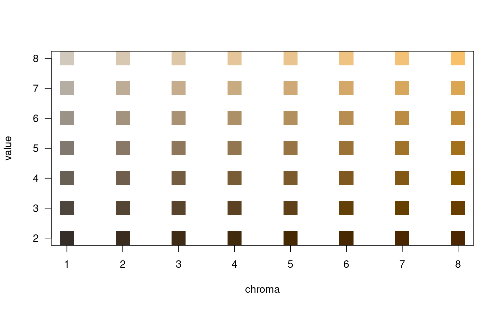
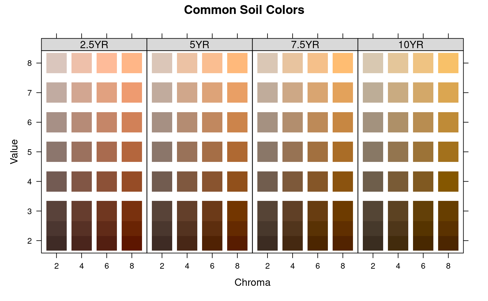
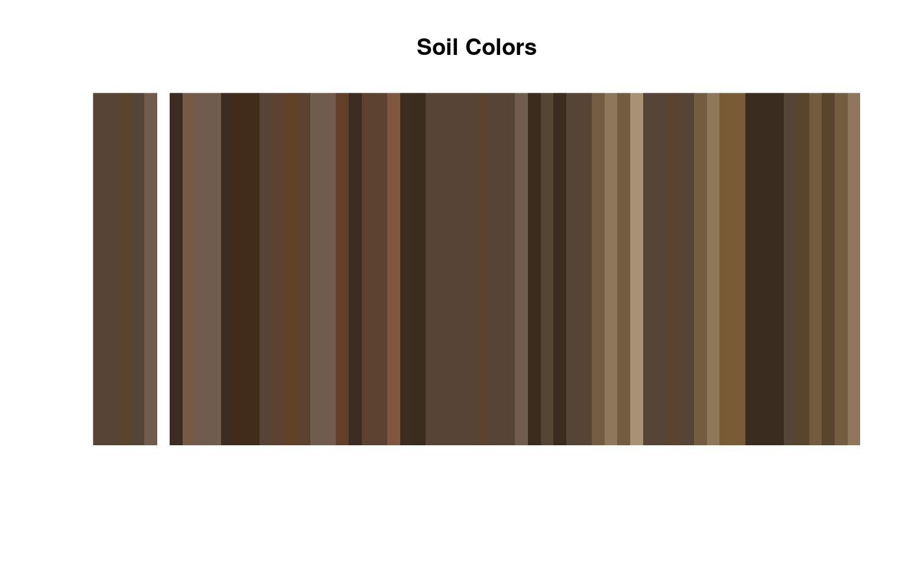
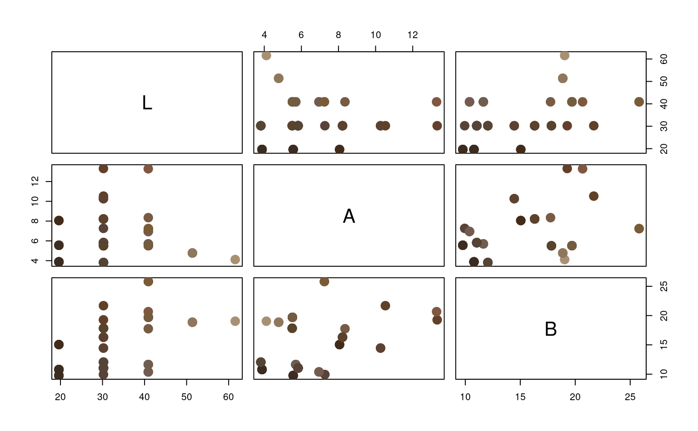

R/munsell2rgb.R
munsell2rgb.RdColor conversion based on a look-up table of common soil colors.
munsell2rgb(
the_hue,
the_value,
the_chroma,
alpha = 1,
maxColorValue = 1,
return_triplets = FALSE,
returnLAB = FALSE
)a vector of one or more more hues, upper-case (e.g. '10YR')
a vector of one or more values (e.g. '4')
a vector of one or more chromas (e.g. '6'), may be NA for neutral hues
numeric, transparency setting used when return_triplets = FALSE and returnLAB = FALSE
maximum sRGB color value, typically 1 (see rgb)
logical, return sRGB coordinates (range 0-1) instead of standard hex notation of sRGB (e.g. '#8080B')
logical, return CIELAB coordinates (D65 illuminant)
A vector of R colors is returned that is the same length as the input data. When return_triplets = TRUE and/or returnLAB = TRUE, then a data.frame (of sample length as input) is returned.
This function is vectorized without recycling: i.e. the length of each argument must be the same. Both functions will pad output with NA if there are any NA present in the inputs.
Neutral hues are approximated by greyscale shades ranging from 20\
Gley soil colors that are missing a chroma will not be correctly interpreted. Consider using a chroma of 1.
Non-standard Munsell notation (e.g. '7.9YR 2.7/2.0') can be matched (nearest-neighbor, no interpolation) to the closest color within the munsell sRGB/CIELAB look-up table via getClosestMunsellChip(). A more accurate estimate of sRGB values from non-standard notation can be achieved with the munsellinterpol package.
See examples below.
Care should be taken when using the resulting sRGB values; they are close to their Munsell counterparts, but will vary based on your monitor and ambient lighting conditions. Also, the value used for maxColorValue will affect the brightness of the colors. Th default value (1) will usually give acceptable results, but can be adjusted to force the colors closer to what the user thinks they should look like.
http://ncss-tech.github.io/AQP/ http://www.brucelindbloom.com/index.html?ColorCalcHelp.html http://www.cis.rit.edu/mcsl/online/munsell.php https://www.munsellcolourscienceforpainters.com/MunsellAndKubelkaMunkToolbox/MunsellAndKubelkaMunkToolbox.html
# neutral hues (N) can be defined with chroma of 0 or NA
g <- expand.grid(hue='N', value=2:8, chroma=0, stringsAsFactors=FALSE)
(m <- munsell2rgb(g$hue, g$value, g$chroma))
#> [1] "#080808FF" "#101111FF" "#1B1C1CFF" "#313233FF" "#464848FF" "#686A6AFF"
#> [7] "#A3A4A2FF"
soilPalette(m)

# back-transform
rgb2munsell(t(col2rgb(m)) / 255)
#> hue value chroma sigma
#> 1 N 2 0 0.07161962
#> 2 N 3 0 0.16006468
#> 3 N 4 0 0.17996207
#> 4 N 5 0 0.51062566
#> 5 N 6 0 0.28213437
#> 6 N 7 0 0.25003053
#> 7 N 8 0 0.24994119
# basic example
d <- expand.grid(hue='10YR', value=2:8, chroma=1:8, stringsAsFactors=FALSE)
d$color <- with(d, munsell2rgb(hue, value, chroma))
# similar to the 10YR color book page
plot(value ~ chroma, data=d, col=d$color, pch=15, cex=3)

# multiple pages of hue:
hues <- c('2.5YR','5YR','7.5YR','10YR')
d <- expand.grid(hue=hues, value=c(2, 2.5, 3:8), chroma=seq(2,8,by=2), stringsAsFactors=FALSE)
# convert Munsell -> sRGB
d$color <- with(d, munsell2rgb(hue, value, chroma))
# extract CIELAB coordinates
with(d, munsell2rgb(hue, value, chroma, returnLAB=TRUE))
#> L A B
#> 1 19.63435 8.581829 6.904671
#> 2 19.63885 7.218216 8.403958
#> 3 19.64309 5.604564 9.796024
#> 4 19.64643 3.925689 10.809552
#> 5 25.61413 8.964981 7.883329
#> 6 25.61874 7.512179 9.391735
#> 7 25.62282 5.921429 10.696891
#> 8 25.62641 4.038568 11.737203
#> 9 30.24227 8.783403 8.562698
#> 10 30.24668 7.318196 9.973034
#> 11 30.25023 5.874147 11.071239
#> 12 30.25386 3.867632 12.070734
#> 13 40.90023 8.235530 8.747398
#> 14 40.90522 7.006269 10.414699
#> 15 40.90911 5.752651 11.670108
#> 16 40.91415 3.659798 13.219944
#> 17 51.37662 7.220215 8.329886
#> 18 51.38134 6.195770 9.884295
#> 19 51.38519 5.025516 11.093351
#> 20 51.39026 3.226903 12.657859
#> 21 61.55559 7.055791 8.489930
#> 22 61.56052 5.986150 10.084287
#> 23 61.56487 4.806467 11.464174
#> 24 61.57020 2.890643 13.064617
#> 25 71.52228 6.481745 8.033863
#> 26 71.52792 5.630443 9.918369
#> 27 71.53294 4.413734 11.519080
#> 28 71.53859 2.505424 13.215844
#> 29 81.31030 5.613064 7.304378
#> 30 81.31713 4.987175 9.651318
#> 31 81.32297 3.855037 11.558159
#> 32 81.32918 2.070366 13.480465
#> 33 19.64320 16.391230 14.123930
#> 34 19.65139 13.732554 17.743790
#> 35 19.65828 10.648231 20.853492
#> 36 19.66376 7.728635 23.220158
#> 37 25.62467 16.841715 15.764548
#> 38 25.63252 14.071901 19.008588
#> 39 25.63934 11.019894 21.877591
#> 40 25.64508 7.816474 24.266000
#> 41 30.25418 16.138556 16.739853
#> 42 30.26102 13.393855 19.324502
#> 43 30.26716 10.607618 21.731190
#> 44 30.27276 7.273108 23.752644
#> 45 40.91452 15.782924 17.510382
#> 46 40.92266 13.374274 20.724075
#> 47 40.92954 10.805412 23.453600
#> 48 40.93614 7.334691 25.847593
#> 49 51.39198 14.333047 16.864441
#> 50 51.40058 12.018702 20.083427
#> 51 51.40723 9.846558 22.590705
#> 52 51.41491 6.589534 25.398280
#> 53 61.57189 13.690371 16.996966
#> 54 61.58009 11.528729 19.945124
#> 55 61.58706 9.311893 22.449645
#> 56 61.59545 5.767040 25.325825
#> 57 71.54012 13.238373 16.932398
#> 58 71.54902 11.071643 20.081274
#> 59 71.55664 8.819834 22.780058
#> 60 71.56566 5.281695 25.841769
#> 61 81.33182 13.190982 17.676192
#> 62 81.34062 10.726767 20.638174
#> 63 81.34837 7.988800 23.176378
#> 64 81.35684 4.585239 25.939244
#> 65 19.64874 23.420666 21.687107
#> 66 19.66004 19.647377 27.500456
#> 67 19.73185 15.623392 28.738487
#> 68 19.79708 11.789189 28.633575
#> 69 25.63195 24.085016 24.235428
#> 70 25.64244 20.110227 30.306955
#> 71 25.65112 15.655904 35.304110
#> 72 25.71159 11.532749 35.488967
#> 73 30.26315 23.129287 25.729721
#> 74 30.27183 19.090733 29.870090
#> 75 30.27909 14.773612 33.318109
#> 76 30.28562 10.361073 36.593382
#> 77 40.92522 22.256649 26.131415
#> 78 40.93482 18.627498 30.507177
#> 79 40.94267 14.898862 34.145885
#> 80 40.95021 10.310876 37.495125
#> 81 51.40546 21.384963 26.254448
#> 82 51.41626 18.006017 31.010246
#> 83 51.42469 14.593435 34.763714
#> 84 51.43370 9.917916 38.688899
#> 85 61.58607 20.615644 26.080886
#> 86 61.59752 17.174317 30.795043
#> 87 61.60622 13.648026 34.297745
#> 88 61.61595 9.051354 38.275584
#> 89 71.55583 20.140978 26.292548
#> 90 71.56736 16.607714 30.760717
#> 91 71.57697 12.952131 34.483628
#> 92 71.58730 8.082088 38.408434
#> 93 81.34757 19.819579 26.715162
#> 94 81.35909 16.136678 30.953382
#> 95 81.36893 12.375018 34.579266
#> 96 81.37960 7.391318 38.424483
#> 97 19.65210 31.118561 29.410615
#> 98 19.81961 26.279610 29.415106
#> 99 19.92242 19.930878 29.199660
#> 100 19.97208 15.075890 29.012675
#> 101 25.63665 31.325985 34.442593
#> 102 25.74255 26.176040 36.522191
#> 103 25.83829 20.112969 36.194864
#> 104 25.89372 15.025805 35.910240
#> 105 30.26917 29.247934 35.554849
#> 106 30.28636 23.775732 41.036601
#> 107 30.35855 18.464558 40.657519
#> 108 30.41422 13.475181 40.307211
#> 109 40.93352 28.554701 35.597727
#> 110 40.94366 23.432865 40.801167
#> 111 40.95230 18.262399 45.524719
#> 112 40.96436 12.702250 49.234842
#> 113 51.41617 28.185376 36.205381
#> 114 51.42787 23.397650 42.094789
#> 115 51.43710 18.487946 46.754196
#> 116 51.44600 12.600851 51.144217
#> 117 61.59727 27.053411 35.071997
#> 118 61.61079 22.541829 41.537982
#> 119 61.62093 17.728209 46.269434
#> 120 61.63119 11.810282 51.060399
#> 121 71.56842 26.519167 35.398310
#> 122 71.58155 21.631230 40.941049
#> 123 71.59281 16.781903 45.899666
#> 124 71.60386 10.863836 50.707770
#> 125 79.86302 21.472639 34.493193
#> 126 80.52058 18.542815 41.446228
#> 127 81.24207 15.968356 46.766651
#> 128 81.39866 10.183410 51.339891
# plot: note that we are setting panel order from red --> yellow
library(lattice)
xyplot(value ~ factor(chroma) | factor(hue, levels=hues),
main="Common Soil Colors", layout=c(4,1), scales=list(alternating=1),
strip=strip.custom(bg=grey(0.85)),
data=d, as.table=TRUE, subscripts=TRUE, xlab='Chroma', ylab='Value',
panel=function(x, y, subscripts, ...)
{
panel.xyplot(x, y, pch=15, cex=4, col=d$color[subscripts])
}
)

# soils example
data(sp1)
# convert colors
sp1$soil_color <- with(sp1, munsell2rgb(hue, value, chroma))
# simple plot, may need to tweak gamma-correction...
image(matrix(1:nrow(sp1)), axes=FALSE, col=sp1$soil_color, main='Soil Colors')

# convert into a more useful color space
# you will need the colorspace package for this to work
if(require(colorspace)) {
# keep RGB triplets from conversion
sp1.rgb <- with(sp1, munsell2rgb(hue, value, chroma, return_triplets=TRUE))
# convert into LAB color space
sp1.lab <- as(with(sp1.rgb, sRGB(r,g,b)), 'LAB')
plot(sp1.lab)
}
#> Loading required package: colorspace

# convert a non-standard color to closest "chip" in `munsell` look-up table
getClosestMunsellChip('7.9YR 2.7/2.0', convertColors = FALSE)
#> [1] "7.5YR 2.5/2"
# convert directly to R color
getClosestMunsellChip('7.9YR 2.7/2.0')
#> [1] "#4B392DFF"